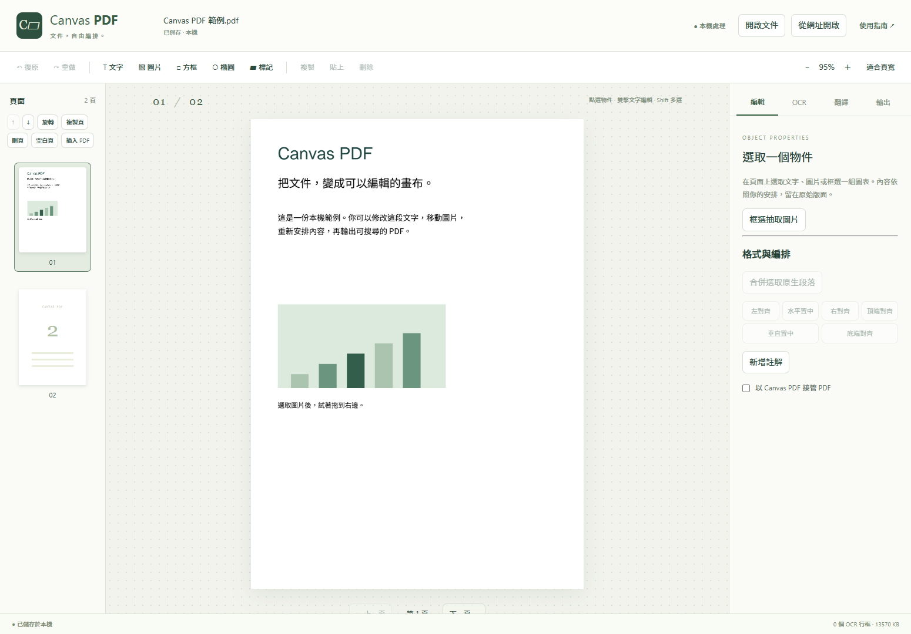

← 回到 Canvas PDFCANVAS PDF · LOCAL EDITION
文件，自由編排。
在 Chrome 本機編輯 PDF、辨識掃描頁並校訂譯文。OCR 模型與繁中字型已隨插件提供。
安裝
- 解壓 canvas-pdf-0.1.1-offline.zip 到固定資料夾。
- 在 chrome://extensions 啟用開發人員模式，選「載入未封裝項目」，指定含 manifest.json 的解壓資料夾。
- 點插件圖示開啟工作台。使用者只需 Chrome 157 以上。

開啟與編輯
- 按「開啟文件」，或直接拖入 PDF。可先按「試用範例文件」熟悉操作。
- 點選段落、圖片或圖形。雙擊文字進入原生輸入；按 Ctrl+Enter 或離開文字框後套用。
- 拖曳物件移動；右下控制點調整大小。Shift 多選，或在空白處框選後建立群組。
- 右側「編輯」可改文字、字級、行距、字型及顏色，並調整對齊與圖層。每次操作可復原／重做。選取圖片後再次選擇圖片檔，可替換該圖片。
多段原生文字貼上會尋找空白位置；空間不足時先插入空白頁。多段貼上形成一個復原步驟。複雜路徑／Form 複製會提示改用區域抽取；抽取後的原位置以獨立圖形遮罩覆蓋，可復原或刪除，原始資料保留。
掃描頁 OCR
- 切到掃描頁，打開「OCR」面板。small 是標準模型；medium 提供較大的辨識模型。
- 按「辨識目前頁面」；也可框選局部。已有文字層卻無法編輯時，可使用「整頁強制辨識（含既有文字）」。CPU 緒數預設自動，最高 4 緒；環境不支援時使用 1 緒。
- OCR 完成後自動選取第一個文字框，右側顯示文字內容。點行框會切換到編輯面板；雙擊可直接改字。到 OCR 分頁可核對原圖、校正搜尋文字，必要時拆分、合併、調整讀序或局部重辨；方向不正時先用頁面工具旋轉後重辨。偵測與辨識分數供校正參考。
- 選「保留原圖／搜尋文字」可保持掃描外觀；選「擦除來源／重建文字框」可修改及移動文字。雙擊提交或在編輯分頁按「套用文字」會自動切換到重建模式。OCR 分頁的「套用校正」保留目前模式，適合只改搜尋文字。先檢查擦除遮罩，調整背景色與區域。
圖案、印章、表格線與文字交疊時，請核對擦除預覽。此編輯流程保留原始專案；正式去識別化需使用另行驗證的工具。
框選辨識區域若含既有 PDF 文字，搜尋輸出會略過重複文字層；可見 OCR 修改需選「點陣化 PDF」輸出，或直接編輯原生段落。
翻譯與校訂
預設 Chrome 本機翻譯。首次使用特定語言組合可能需由瀏覽器下載語言包；API 或模型不可用時會明確提示。
Gemini 匿名 RPC 為選用來源。傳送前會列出文字範圍及目的地，PDF 檔案與頁面圖片保留在本機。來源可能改版或受阻；已提交但結果未知的請求會鎖定，需由你確認後解除，不會自動重送。
選取段落、目前頁面或全文後開始翻譯。術語以每行「原文＝譯文」輸入。本機翻譯保留整段上下文，再核對術語與公式；無法可靠套用時會保留其他成果並提示核對。譯文可校訂並套用到文字框；請核對專有名詞、數字、日期、條號及引文。
保存與輸出
- 編輯狀態自動保存在目前 Chrome 設定檔。
- 「輸出」提供編輯版、可搜尋掃描版、譯文版、原文／譯文配對頁，以及選頁輸出。整頁點陣化為明確的替代選項，會將文字與向量變成圖片。
- 下載完整專案 ZIP，可保留原始 PDF、OCR、譯文及編輯狀態。拖回 ZIP 可建立恢復副本。
- 移除插件或更換 Chrome 設定檔前，先下載專案 ZIP。
- PDF 預設另存新檔。原文件含數位簽章時，內容修改會影響簽章驗證。
安裝與授權
Chrome 157 以上，在擴充功能頁開啟開發人員模式，載入解壓後的插件資料夾。預設不接管原生 PDF 閱讀器，可於編輯面板勾選接管；支援一次性網址、POST、內嵌與本機 PDF。接管頁面可按「獨立分頁編輯」繼續同一專案。
Canvas PDF 衍生程式採 AGPL-3.0。既有 Canvas Clipper、Slides、Runaway 與共用程式保留各自授權。來源與適配見套件的 SOURCES.md、THIRD_PARTY_NOTICES.md 與 licenses。
本機預覽版已通過自動驗收；實體 IME、使用者設定檔與真實文件人工 OCR 金標仍待驗收。40 頁合成測試的結果不能代替真實文件品質。